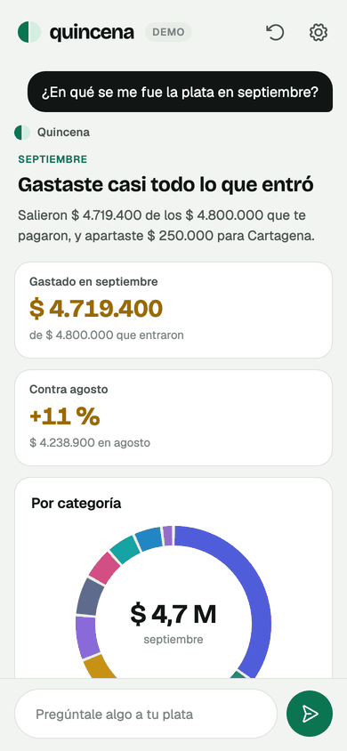
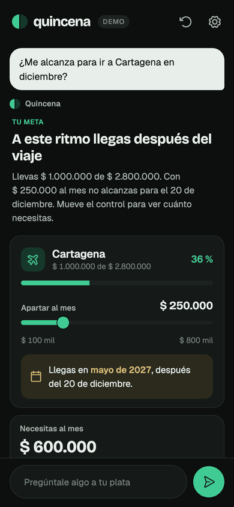
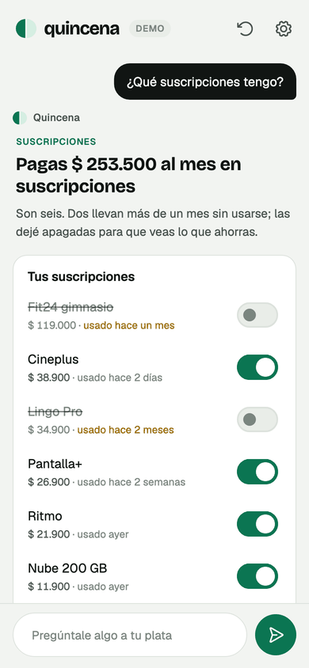

Flutter · A2UI · pub.dev
Annotate a Flutter widget and the catalog an agent composes against is derived from its constructor — schema, builder and examples — so it cannot drift from the widget it describes.
The problem
A genui catalog needs three things per widget: a JSON schema the model composes against, a builder that turns that JSON back into a widget, and example data for tooling and few-shot prompts.
Write them by hand and they drift in silence. Rename a constructor parameter, add a required one, change an enum — the app still compiles, and the model keeps composing against last month's contract. The first symptom is a malformed message in production.
So don't write them. The generator reads the constructor with the analyzer and emits all three from it. The property names are the parameter names; the required list is the set of non-nullable parameters without defaults. There is no second source of truth to keep in sync.
1 · you write this
@GenUiWidget(description: 'A product card with price and image.') class ProductCard extends StatelessWidget { const ProductCard({ super.key, required this.title, required this.price, this.imageUrl, this.onTap, }); /// Product name. final String title; /// Price in USD. final double price; /// Optional image URL. final String? imageUrl; /// Fired when the card is tapped. final VoidCallback? onTap;
2 · build_runner emits this
final CatalogItem productCardCatalogItem = CatalogItem( name: 'ProductCard', dataSchema: S.object( description: 'A product card with price and image.', properties: { 'title': A2uiSchemas.stringReference( description: 'Product name.', ), 'price': A2uiSchemas.numberReference( description: 'Price in USD.', ), 'imageUrl': A2uiSchemas.stringReference(...), 'onTap': A2uiSchemas.action(...), }, required: ['title', 'price'], ), // + widgetBuilder, + exampleData );
3 · the model may send this
{
"id": "root",
"component": "ProductCard",
"title": "Noise-cancelling headphones",
"price": 249.99,
"imageUrl": {
"path": "/cart/0/image"
},
"onTap": {
"event": { "name": "onTap" }
}
}
every property takes a literal or a binding
Change the constructor and the generated part changes in review, or the build fails. The catalog can't fall behind the widget, because the catalog is a function of the widget.
package:genui_gen/tracing.dart
Someone reports that the list came up empty. You open the code and there is no list: a model composed that screen, once, from a context that will not come back.
A trace is that session kept on disk — every message the agent sent, the data model each time it changed, every action the app sent back. It replays with no model and no network, because A2UI describes interfaces as data.
Below is a real recording from the example app, five steps, exactly as GenUiTraceRecorder wrote it. Drag the scrubber.
what was on screen at that step
record
final recorder = GenUiTraceRecorder.attach( controller, catalogId: genUiCatalog.catalogId, redact: const ['/user/email'], ); transport.messages.listen(recorder.handleMessage); // ... await File('bug-4821.a2ui-trace') .writeAsString(recorder.build().encode());
replay, in a test, against today's catalog
final player = GenUiTracePlayer(trace, catalog: genUiCatalog) ..seek(4); await tester.pumpWidget( MaterialApp(home: GenUiTraceView(player: player)), ); expect(find.text('Call the dentist'), findsOneWidget);
That is how last week's session becomes this week's regression test: a catalog change that breaks a real conversation fails here first. redact names the data model paths that must never reach the file — the field holding an email belongs in that list before the first recording, not after the first leak.
@GenUiProp(template: true)
A list of children is normally written out by the agent, one id at a time. That works until the list is the data: five tasks today, nine tomorrow, and a new surface composed every time one is added.
A template property takes the other shape A2UI allows. The agent describes the row once and names a path; one row is built per entry there. A new entry adds a row with nobody asked.
the widget
@GenUiWidget(description: 'A titled list of rows, one per item in the data.') class TaskList extends StatelessWidget { const TaskList({ super.key, required this.title, @GenUiProp(template: true) required this.rows, this.emptyLabel = 'Nothing here yet.', }); final String title; /// One row per task. final List<Widget> rows;
the agent sends the row once
{
"id": "root",
"component": "TaskList",
"title": "Today",
"rows": {
"componentId": "task_row",
"path": "/tasks"
}
},
{
"id": "task_row",
"component": "Text",
"text": { "path": "label" }
}
label against /tasks/2/label, so one component describes every row.@GenUiFunction
Everything above is one half. Components are what the agent composes a surface out of. Functions are what it computes a value with, through the {"call": ...} form every bound property already accepts.
genui registers fourteen of them, and adding one of your own meant writing a ClientFunction by hand: the name, the description, an argument schema spelled out in JSON schema, the return type, and an execute that digs each argument back out of a map and casts it. The schema sits beside the code that reads the arguments and is free to drift from it, which is the problem this package exists to remove.
annotate an ordinary Dart function
enum NameStyle { initials, firstOnly, lastFirst }
@GenUiFunction(description: 'Shortens a full name for display.')
String shortenName(
/// The name to shorten.
String name, {
/// How to shorten it.
NameStyle style = NameStyle.initials,
}) { /* ... */ }
schema, required list, enum values and return type all come from the signature
the agent names it, and never learns the rule
{
"id": "row",
"component": "Text",
"text": {
"call": "shortenName",
"args": {
"name": { "path": "name" },
"style": "lastFirst"
}
}
}
Put that inside a template and one component describes a whole list whose text the app computes: three people in the data model, three rows reading Lovelace, Ada · Hopper, Grace · Turing, Alan. Neither the shortened strings nor the rule that produced them were ever on the wire.
Future<T> return becomes an async function and a Stream<T> a reactive one, which is how a function with its own source of change keeps answering.required would change what every prompt written against it means.catalog.json on their own, so adding one needs no other change anywhere.@GenUiChecked
A2UI lets the agent attach rules to an input. A CheckRule is a condition and the message to show when it fails, and both are required. The rules belong to the agent, because what counts as valid depends on what it is asking for. A widget only has to be willing to say so.
the widget accepts the answer
class LabeledField extends StatelessWidget {
const LabeledField({
super.key,
required this.label,
required this.value,
@GenUiWrites('value') this.onChanged,
@GenUiChecked() this.error,
});
/// The message of the first failing rule.
final String? error;
the agent attaches the rule and the words
{
"component": "LabeledField",
"value": { "path": "/form/email" },
"checks": [
{
"condition": {
"call": "required",
"args": {
"value": { "path": "/form/email" }
}
},
"message": "We need an email to reach you."
}
]
}
Together with @GenUiWrites the loop closes with the agent outside it. The user types, the value lands at /form/email, the rule is re-evaluated against that same path, and the message clears. Nothing goes back over the wire.
and and keeps no messages, which is why the stock catalog can only colour a field red. The message is the only part of a rule a person ever reads.String? takes that message, a bool takes whether every rule passes, a GenUiCheckResult takes both. A non-nullable String is a build error: a passing rule has no message to give it.genUiFuzz
A catalog is a contract with something that cannot be recompiled, and the only thing holding a model to it is a JSON schema. Every widget test you write checks the input you had in mind. This checks the ones the schema permits and you did not.
It takes each component's own generated example and replaces one property at a time: a required one left out, a string where a number was declared, an empty list, two hundred entries, a binding that never resolves, a call to a function nobody registered.
one line in a widget test
final findings = await genUiFuzz(
catalog: genUiCatalog,
pump: tester.pumpWidget,
);
expect(findings, isEmpty,
reason: genUiFuzzSummary(findings));
every finding hands you the case, not a description of it
pointed at genui's own basic catalog
69 in 5 components
28 Slider (28 threw)
17 Tabs (17 threw)
11 TextField (11 threw)
10 DateTimeInput (10 threw)
3 Row (3 threw)
Slider: `max` as an empty list
threw: type 'List<Object?>' is not a
subtype of type 'num?' in type cast
{"id":"root","component":"Slider",
"value":0.5,"max":[]}
Two of those are input that is valid against the component's own published schema. A Slider whose value falls outside its own min and max asserts, and so does one whose max is negative. Nothing in the schema says a model may not pick those numbers. Filed as a2ui#2872.
genUiCoverage
A catalog travels in every request whether the agent composes with it or not. The weight report says what each component costs. This says which ones earned it.
It reads the traces the recorder already keeps, so the corpus is whatever sessions you have: a canary run, a week of bug reports, the scripted turns in your example app.
the whole call
final coverage = genUiCoverage( catalog: genUiCatalog, traces: recorded, ); print(coverage.describe());
the example app's own catalog
9 of 26 components used across 5 sessions
never composed:
2340 6.9% ChoicePicker
1312 3.9% TextField
1101 3.3% Icon
...
14639 43.4% in every request, for
components the agent
never asked for
composed, with properties never filled:
Button: checks
Panel: onClose
TaskList: emptyLabel
enum values never chosen:
StatTile.trend: down, flat
Not a rule to enforce. A catalog is written before the conversations that use it, and an error state should be rare. It is the answer to "is this catalog too big, and which part is the dead weight" with data instead of intuition.
package:genui_gen/inspector.dart
Debugging an ordinary screen starts by opening the file that built it. A generated screen has no such file: a model composed it at runtime from a context that is gone, and the message it sent was handled and dropped. The usual first question — what is this thing made of — has no answer in the source.
A trace is for the session you already lost. This is for the one you are looking at. Wrap it around whatever renders the surfaces and it draws a handle in the corner.
in debug, over the app you already have
GenUiInspector( controller: controller, recorder: recorder, child: GenUiConversation(...), )
gone from a release build; enabled defaults to kDebugMode
the four tabs, on one real turn of the example app
Tree
What the model built, with the paths each component binds. A path written inside a template comes back resolved — label under a template over /tasks is /tasks/*/label, which is every row and no row in particular.
Data
Every path, what it holds now, and which components read it. It reads both ways, which is where it earns its keep.
Semantics
What a screen reader would announce, taken live. A generated screen can announce nothing at all without looking any different.
Messages
The session so far, from the same recorder that writes the trace: what the agent sent, how the data model changed, what the app sent back.
The Data tab reads bindings in both directions on purpose. A path nothing on the surface reads is payload the agent paid for and nobody saw. A path a component binds that the data model has no entry for is the usual reason a field renders empty with no error anywhere — neither one raises anything, and neither is visible from the code.
GenUiSurfaceGraph is the same reading with no widgets in it, for a test that wants to assert on the shape of a surface rather than look at it. It reports a component nothing reaches from the root and a component that contains itself. It does not report a child reference naming a component that was never created, because it cannot: A2UI names a child with a plain string, and nothing in the message tells that apart from text.
package:genui_gen/testing.dart
The schema half of a catalog is checked when it's generated. The other half — what the rendered component says to the person using it, and what the whole document costs to send — has nothing checking it, and it's the half a Dart diff doesn't show.
| Call | What it keeps | What it fails on |
|---|---|---|
| genUiSemanticsGolden | Role, name, value, state and actions of every component, in traversal order, as a reviewable JSON file. | A widget change that quietly alters what a screen reader is told. |
| genUiSemanticsAudit | Runs over that same recording. | A control with nothing to announce, a component that reaches assistive tech as nothing at all, two controls that announce themselves identically. |
| genUiCatalogDiff | Yesterday's published catalog.json against today's. |
A property that disappears, becomes required, changes type, or loses an enum value — all invisible to your compiler, all breaking for the agent. |
| genUiCatalogWeight | How many characters each component takes of the document that travels in every request. | Nothing on its own. It tells you which component is eating the prompt. |
the golden, as it is written
{
"components": {
"PreferenceRow": [
{
"role": "switch",
"name": "Sample label",
"state": { "on": true, "disabled": false },
"actions": ["tap", "focus"]
}
],
"Image": [],
"Icon": []
}
}
two empty arrays: a screen reader is told nothing
the weight of the example's catalog, measured
characters, not tokens — a number that pretends to be exact about someone else's tokenizer is worse than an honest proportion
Filed upstream
The semantics recorder was written for this package's own widgets. Pointed at genui's basic catalog — the components everyone gets for free — it produced a file full of empty arrays and unnamed controls. Each of these was measured with the tooling on this page before it was reported.
| Where | What the recording showed | Status |
|---|---|---|
| a2ui#2697 | Every A2UI component declares accessibility.label and description. Neither reaches the semantics tree — the renderer drops them. |
genui#1035 |
| a2ui#2763 | Sliders, volume controls and playback buttons record a role and no name. There is nothing for a screen reader to say. | genui#1042 |
| a2ui#2740 | Image and Icon record as []. The catalog's own description is never applied as a label. |
Open |
| a2ui#2736 | CheckBox ignores a literal value and renders unchecked, so the model's state and the screen disagree. |
genui#1038 |
| a2ui#2737 | Slider behaves as a two-position switch over its default range, and crashes below it. |
Open |
| a2ui#2738 | Proposal: hold Flutter, SwiftUI, Compose and the web to one semantics tree per component — the shape this recorder already writes. | Proposed |
Role, name, value, state and actions is the only description of a rendered surface that every A2UI renderer can be held to. Which means the same recording says what a second client, in another language, would have to reproduce from your catalog.
In a real app
Ask where September's money went and an agent answers with a donut chart, the two things that moved and the five largest payments. Ask whether a December trip is within reach and it answers with a goal and a slider: drag it and the arrival date recalculates on the device, with no new message from the agent.
None of those screens is in the app's source. Its twenty components and six functions are annotated widgets and Dart functions, the catalog is generated from them, and the rest of this page is wired in: the inspector behind developer mode, real Gemini sessions recorded with the tracer and replayed with no network, and the fuzzer, the semantics audit and the catalog check in its tests.



Getting started
1 · pubspec.yaml
dependencies: genui: ^0.10.0 genui_gen: ^0.14.0 dev_dependencies: build_runner: ^2.15.0 genui_gen_builder: ^0.13.0
2 · build.yaml
targets:
$default:
builders:
genui_gen_builder:genui_catalog:
options:
catalog_id: com.example.app
The id names your catalog to everything outside the build. A generator can't invent it.
3 · anywhere
dart run build_runner build
Every annotated widget lands in a generated genui_catalog.g.dart, sorted, so registering a catalog stops being a hand-maintained list of names.
and the catalog is one line, whatever the app grows into
import 'genui_catalog.g.dart';
final catalog = genUiCatalog.copyWith(
newItems: BasicCatalogItems.asCatalog().items.toList(),
newFunctions: BasicCatalogItems.asCatalog().functions.toList(),
);